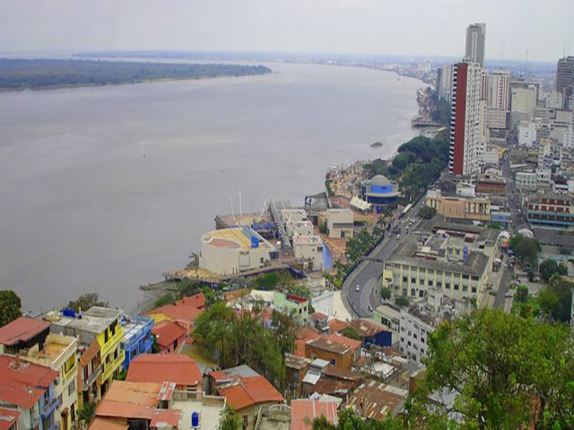
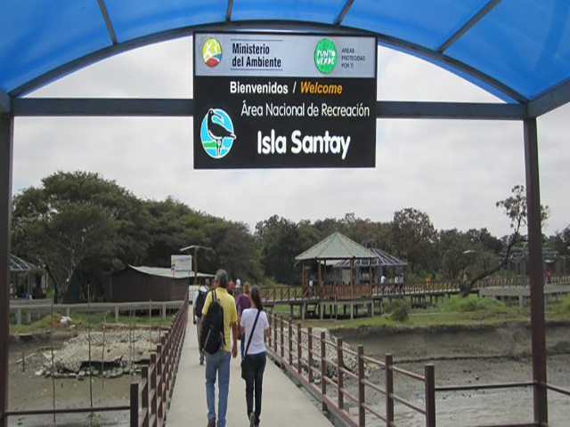
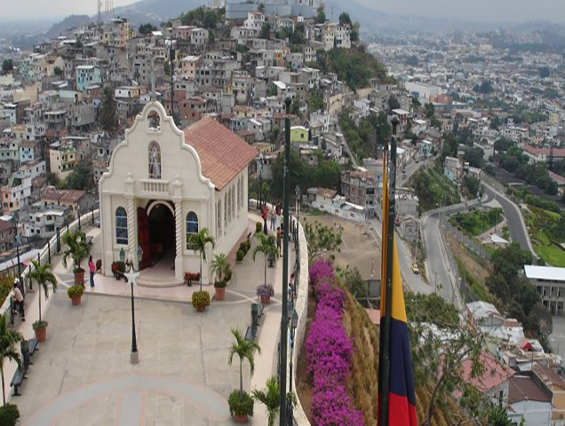
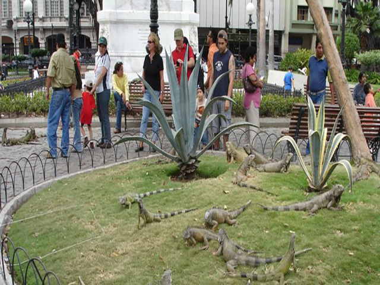
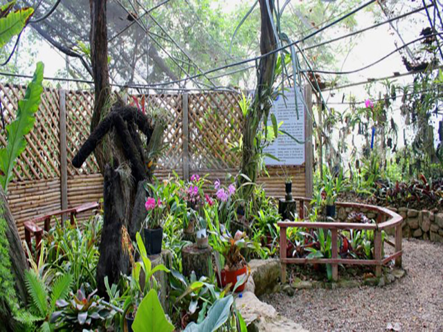
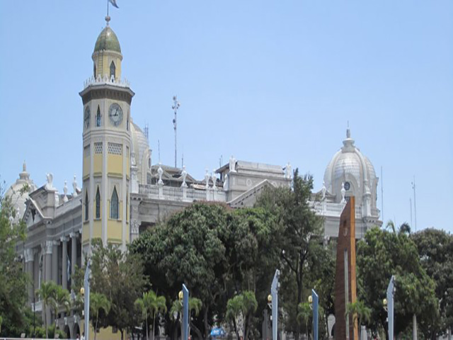

Malecon 2000
One of the characteristics that distinguishes Guayaquil is its immense boardwalk around the banks of the Guayas River to the east of the city. Also called Malecón Simón Bolívar, it is the meeting place par excellence thanks to the friendly climate, the attractions to see and the gastronomic options.
Santay Island
When it comes to tourist places in Guayaquil, it is almost a must to visit Santay Island, connected to the city by a pedestrian bridge of more than 800 meters built just for the enjoyment of tourists and locals. Isla Santay is rich in flora and fauna and the mangroves are its main feature. The bridge can be crossed on foot, by bicycle or with a vehicle (there is parking on the Island
Santa Ana Hill
It is the only viewpoint in Guayaquil that offers a 360-degree view of the city. You can see it everywhere! From the source of the Guayas River to the north, to the commercial center of the city to the south. At the foot of Cerro Santa Ana is the Barrio Las Peñas, a picturesque and emblematic place in the city with colonial-style houses and a lot of history to discover among its streets founded in the 16th century, hence its tourist attraction.
Iguanas park
Very close to the boardwalk and the Moorish Tower is the home of the iguanas, that is, the Seminary Park where you can feed these animals with pieces of lettuce that the caretaker delivers. It is a square that, at the time, was the Plaza de Armas, it was also called the Bolívar Park but today it is known for the presence of a community of friendly iguanas that allow themselves to be portrayed without problem by passers-by.
Botanical Garden
If the walk with iguanas leaves you wanting more nature, visit the Botanical Garden of Guayaquil. Orchids, water sources and thousands of unique plants will welcome you. The biodiversity of Ecuador is known and this place offers a great summary of species of birds, mammals and fish. Take advantage of visiting them in the mornings.
Moorish Tower or Clock Tower
This is one of the ideal tourist places in Guayaquil to take the perfect postcard photo of your trip to Ecuador. It is an emblem of the city and has been standing since 1931. However, the clock on top of the Moorish Tower dates from 1800 and was brought from Europe as a gift to the city.
